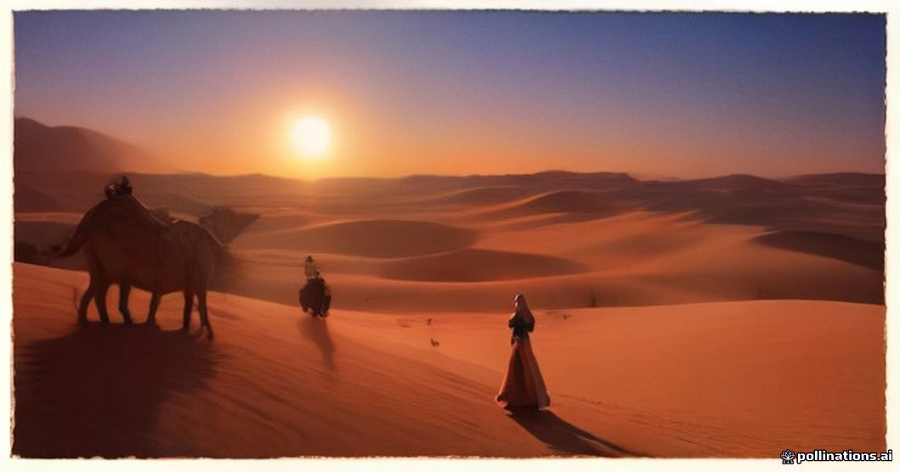

Arriving at the edge of Erg Chebbi in Merzouga presents an immediate operational choice: reaching your desert camp by traditional camel trek or direct 4x4 transfer across the dunes. Both options lead to the same night in the sand, but they cater to very different physical comfort levels, time constraints, and travel styles.
While marketing copy often frames the camel ride as a mandatory desert ritual, it is not practical or comfortable for every traveller. Understanding the mechanical differences, physical strain, and welfare considerations helps you select the transfer method that matches your group's health and expectations.
Duration, Timing, and Sunset Logistics
A standard camel trek from the village rim to an inland camp takes between 60 to 90 minutes, depending on the camp's precise location behind the primary dunes. Departure times are strictly tied to the sun's position—usually leaving 1 to 1.5 hours before sunset to avoid riding in direct heat.
By contrast, a 4x4 transfer takes 15 to 25 minutes across hardpack soil and sand tracks. This rapid arrival allows travellers to settle into their tents, unpack, and climb the adjacent dunes on foot for sunset without the physical fatigue of mounting a dromedary after a long drive from Marrakesh or Fes.
Physical Comfort and Riding Mechanics
Riding a dromedary involves a rhythmic, swaying motion that constantly engages your core, lower back, and inner thigh muscles. The wooden saddles are cushioned with blankets, but the lack of traditional stirrups leaves your legs hanging freely, which often causes knee or hip stiffness after 30 minutes.
A 4x4 transfer provides standard vehicle seating and climate control, eliminating joint stress. It is the practical choice for anyone recovering from joint surgery or dealing with chronic back pain. If you are evaluating transport options for your overall circuit, read our guide on /blog-vehicle-selection-luggage-legroom-sahara-tour.
Evaluating Animal Welfare on Site
Responsible operators prioritize animal health over rigid tourist schedules. When observing dromedaries in Merzouga, look for clear eyes, healthy coats free of saddle sores, and calm responses during mounting. Animals should never carry heavy hard luggage alongside riders; your main bags should travel separately in a 4x4 vehicle.
Before booking, ask your operator about shift rotations and rider weight restrictions. Good handlers restrict working hours during summer heat and rotate animals daily. For an in-depth breakdown of animal care standards, review our notes on /blog-camel-trekking-ethics.
Best Choice for Older Travellers and Families
For multi-generational families or older travellers, splitting transport modes within the same group works exceptionally well. One person can ride a camel while others travel in the 4x4 with the luggage, meeting directly at the camp perimeter.
If mounting or dismounting from ground level poses a fall risk or severe discomfort, skip the camel trek entirely. You will still experience the dunes, campfires, and starlight from camp. Guests planning around physical constraints should consult our notes on /blog-limited-mobility-sahara-desert-tour or consider arranging a dedicated /blog-no-camel-tour.
| Criteria | Camel Trek | 4x4 Transfer |
|---|---|---|
| Transfer Time | 60 – 90 minutes | 15 – 25 minutes |
| Physical Demand | Moderate (core, back, and hips) | Low (standard seated vehicle) |
| Luggage Capacity | Small daypack only | All main suitcases and gear |
| Weather Exposure | Direct sun, wind, and blowing sand | Enclosed, climate-controlled |
| Senior Suitability | Requires hip and knee flexibility | Ideal for limited mobility |

Illustration, not a photograph — for the real thing, you'll have to stand on the ridge yourself.
Quick answers
A few follow-up questions travelers ask about this.
Can I ride a camel one way and take a 4x4 back?
Yes. A very common arrangement is riding camels into camp for the sunset and taking a 4x4 transfer back to the main vehicle point after breakfast to save time and hip strain.
What happens to our main luggage during a camel trek?
Main suitcases and heavy travel bags are loaded into a 4x4 vehicle and driven directly to your tent before or during your camel trek. You only need to carry a small daypack.
Is there a weight limit for camel riding?
Standard operational guidelines set a maximum weight limit of 90–100 kg (200–220 lbs) per rider to protect camel spine health and maintain balance on steep sand inclines.
Planning your own route?
Tell us your dates and what matters to you — we'll answer with a straight recommendation, not a brochure.
Send an inquiry See the itineraries